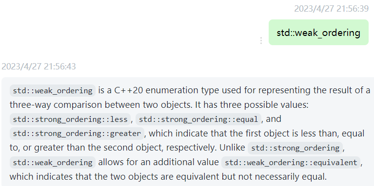
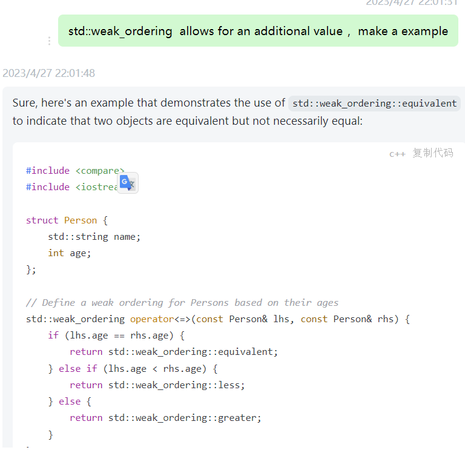

背景：在看三路比较符的时候，遇到了一个weak_ordering的概念

gpt提出了一个std::strong_ordering，跟std::weak_ordering的不同是，后者允许格外值
彼时的我不明所以，于是铁头娃，接着问

gpt虽然没有讲清楚，但是此时我好像懂了，附加值的意思是，weak版允许等价但不相等，有点抽象 🤣
即，weak版可以返回不严格等于
此时我也觉得gpt可能再往下说，也是重复举一些例子了，还是没有恰当的例子
于是上知乎找例子
最终发现一个例子，大小写忽略字符串的比较
over